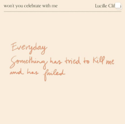
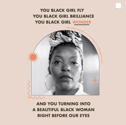

The Emerging Visionary Grant
Apply Now!The Emerging Visionary grant
is a $50,000 opportunity for artists
whose work is rooted in uplifting their community
for positive impact.
Criteria
Eligible artists whose work is rooted in uplifting their community.
- • Have an existing platform
with examples of community work
(recognized for work through other grants, community awards, partnerships, programs, website, social media presence)
- • Be an emerging creative who is in the process of building a platform in their respective fields
Deadline: March 1st, 2021 at 11:59pm EST
Follow us.
GOOD MIRRORS
@goodmirrorsarentcheap



SheaMoisture
@SheaMoisture